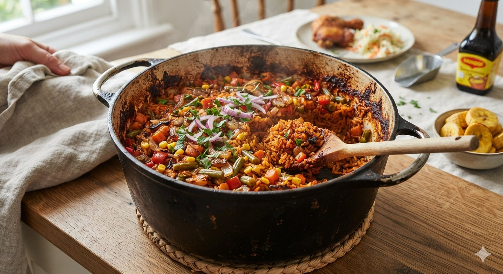

Spicy
Quick
The smoky, tomato-rich rice that starts arguments are at every family gathering. This is the pary version cooked long enough to catch at the bottom
- 3 cups long grain parboiled rice
- 6 large tomatoes, blended
- 2 red bell peppers,diced
- 1 large onion,diced
- Half cup vegetable oil
- 3 table spoons tomato paste
- 2 stock cubes
- 1 teaspoon curry powder
- 1 teaspoon thyme
- Salt to taste
- Blend the tomatoes,peppers and half the onion until smoothly
- Heat the oil and fry the remaining onion until golden
- Add the tomato paste and fry for 2 minutes
- Add the tomato mixture and fry for 10 minutes
- Add the stock cubes,curry powder,thyme and salt. Stir and cook for 5 minutes
- Add the rice and stir to coat with the sauce
- Add 4 cups of water and bring to a boil
- Reduce the heat to low, cover and cook for 20 minutes
- Remove from heat and let it sit for 10 minutes before serving
Method
Notes
The party smoke: the slight burn at the bottom is the main point. Ressit the urge to stir the rice while cooking. The bottom layer will be slightly burnt,but that is the point,it is what makes party jollof rice so special.
Rice choice: long grain parboiled holds its shape. Basmati will turn to mush